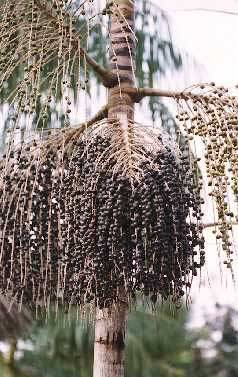

Açaí (or Açaí berries) is a fruit that comes from the Açaí palm.
Global demand for the fruit has expanded rapidly in the 21st century,
and the tree (Açaí palm), is cultivated for that purpose primarily.
The species is native to eastern Amazonia, especially in Brazil, mainly in swamps and floodplains.
Açaí palms are tall, slender trees growing to more than 25 m (82 ft) tall, with pinnate leaves up to 3 m (9.8 ft) long.
The fruit is small, round, and black-purple in color.
Cultivation

Açaí palm with fruits.
The cultivation of açaí, mainly of the species Euterpe oleracea, occurs in floodplain regions and wet areas of the Amazon.
The process includes the following steps:
Planting: Açaí seedlings are usually planted in moist soil, with adequate spacing
between them to ensure good air circulation and access to light.
Care: During growth, it’s important to monitor irrigation, pest and disease control,
and fertilization, which can be done with organic matter.
Deforestation and Management: In some cases, açaí palms are cultivated in already
deforested areas, where sustainable management is essential to maintain the local ecosystem.
There are two harvests: one is normally between January and June, while the other is between
August and December, producing larger volumes.
In 2022, the state of Pará, which accounts for 90% of Brazil's total açaí economy,
produced 8,158 tonnes (17,985,000 lb) of açaí berries, generating US$26 million in revenue.
The 2022 production was 209 times greater than the volume produced in 2012.
The majority of the production remains in the state of Pará: 60% is consumed in the region,
30% is exported to another brazilian states, and 10% is exported abroad.
Nutritional benefits
Açaí is rich in fats, most of which are monounsaturated (60%) and polyunsaturated (13%),
which are beneficial and are also present in avocado and olive oil, helping to reduce
bad cholesterol (LDL) and improve HDL, helping to prevent cardiovascular diseases
such as heart attacks and even preventing obesity, memory problems and physical weakness.
Anthocyanin, the pigment that gives teeth their purplish color, has a great ability to fight
free radicals, molecules that destroy healthy cells in the body.